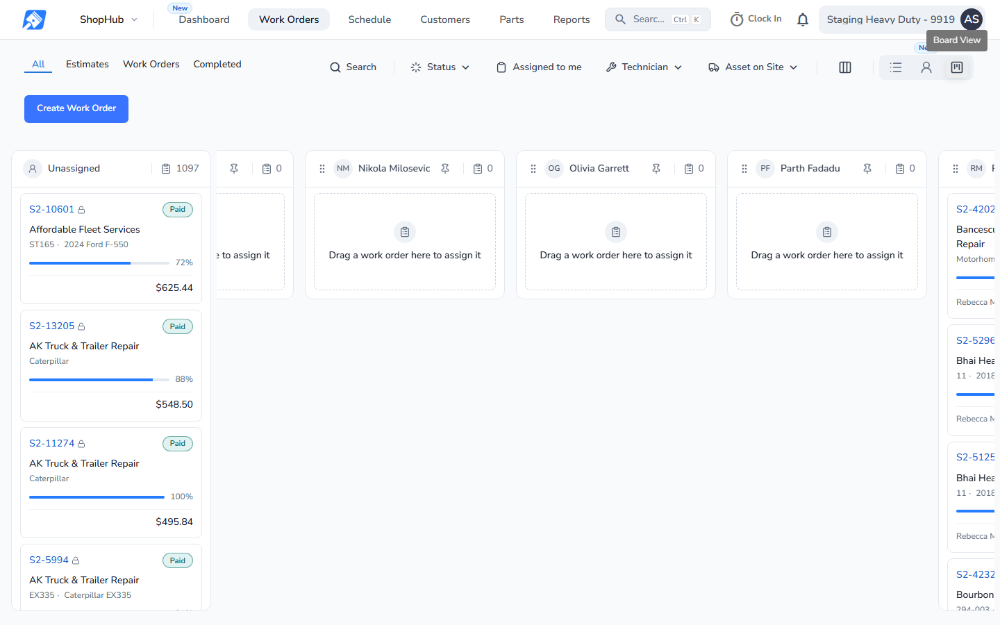
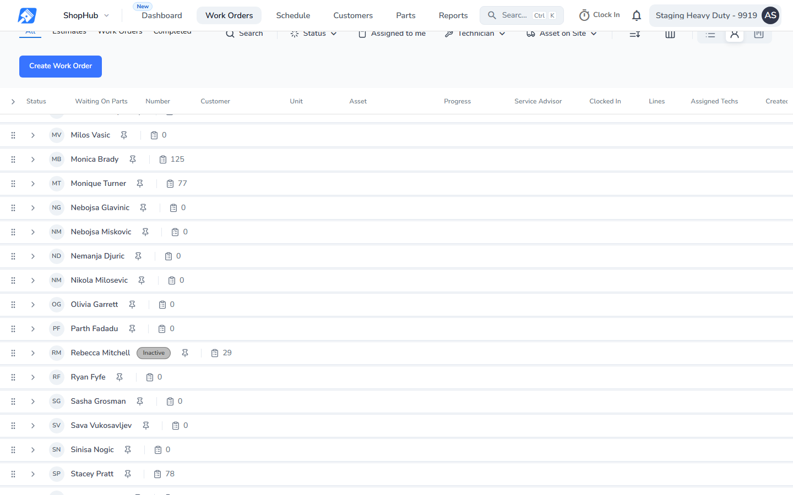
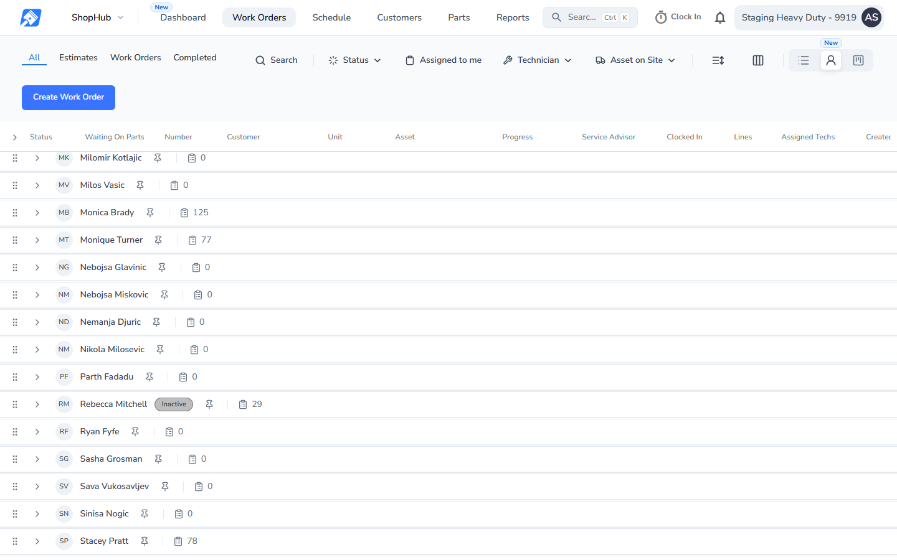
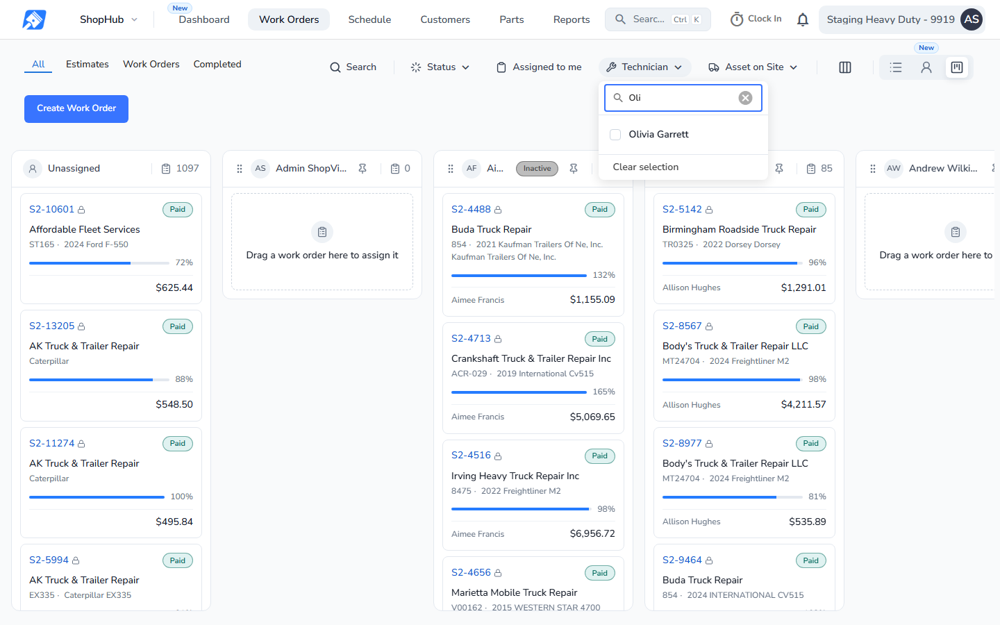
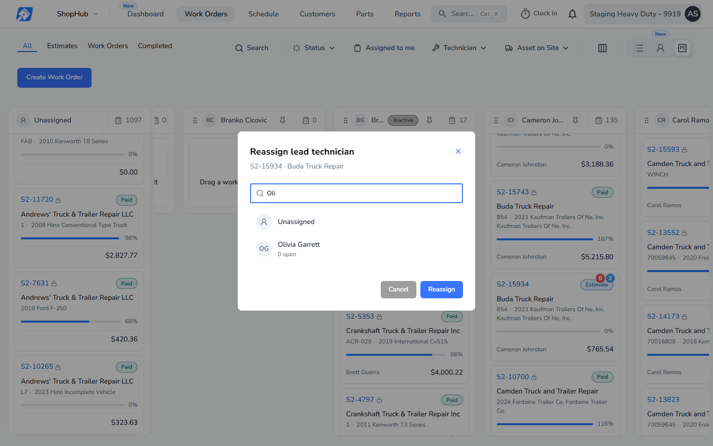
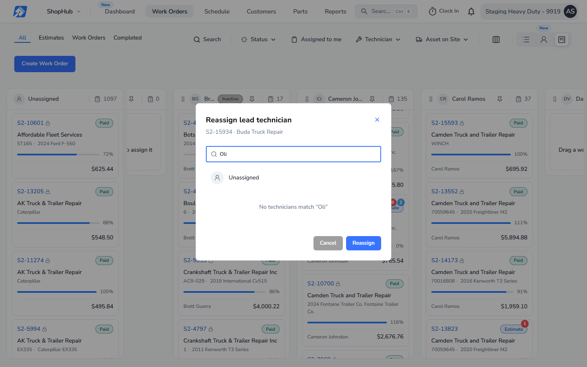

Work Orders. The problem from SV-11719: everyone with Time Clock on gets a column, so a Parts Manager shows up as a technician. Same demo person as page 2: Olivia Garrett, Parts Manager, Time Clock on, Technician off, leading no work. Columns sort by name, so she sits between Nikola Milosevic and Parth Fadadu. Before: production code (release v26.43.1). After: this build. Other columns can differ slightly between the two because the release-day step ran on the demo data before the after shots.





